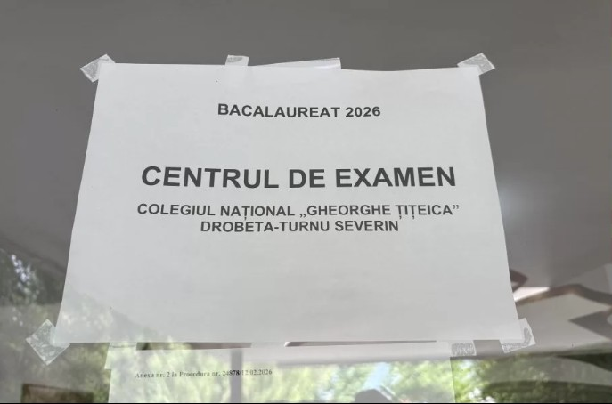

Rezultatele examenului național de Bacalaureat 2026 aduc vești mixte pentru învățământul mehedințean. Deși rata de promovare la nivelul județului a crescut la 66,3%, însă diferențele dintre unitățile de învățământ rămân semnificative.
Cea mai mare rată de promovare a fost înregistrată de Colegiul Național „Gheorghe Țițeica" Drobeta-Turnu Severin, unde 97,51% dintre candidați au promovat examenul de Bacalaureat.
Spre deosebire de alte sesiuni de examen, în acest an niciun liceu din Mehedinți nu a înregistrat o rată de promovare de 0%. Totuși, decalajele rămân considerabile: la polul opus față de Colegiul „Gheorghe Țițeica", două licee din județ au înregistrat doar 12,5% promovare.
Diferențele mari dintre unitățile de învățământ cu rezultate foarte bune și cele cu rezultate modeste rămân o temă de discuție recurentă pentru autoritățile din educație, care analizează periodic măsurile de sprijin necesare pentru elevii aflați în dificultate.
Elevii care nu au promovat examenul de Bacalaureat în sesiunea din vară au posibilitatea de a se înscrie la sesiunea de toamnă, conform calendarului stabilit de Ministerul Educației. Rezultatele finale, după soluționarea contestațiilor, pot aduce mici ajustări ale procentelor de promovare la nivelul județului.